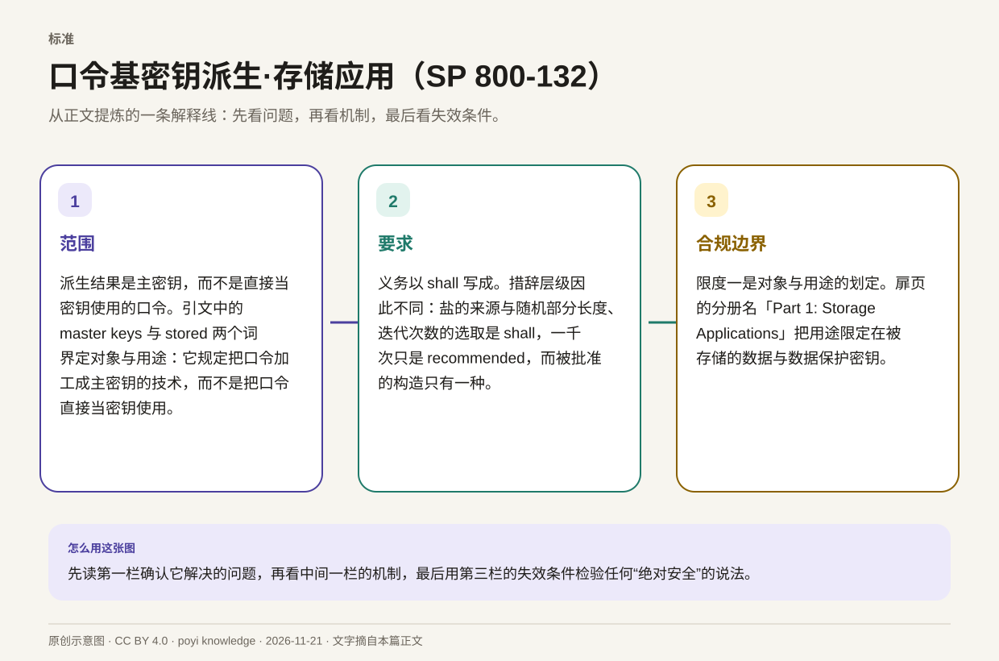
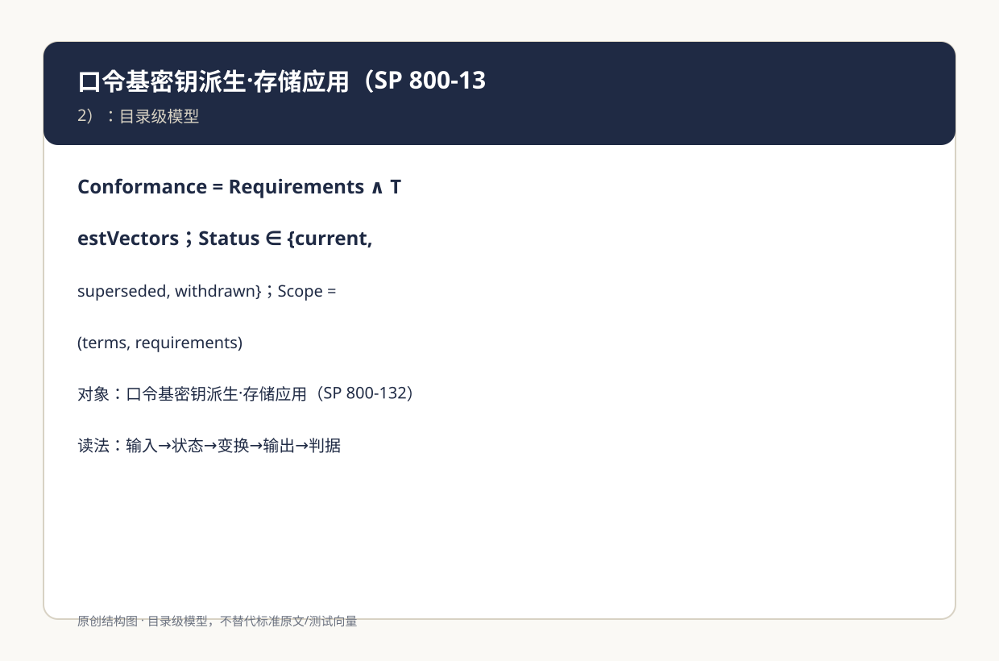

原理与机制
标准：口令基密钥派生·存储应用（SP 800-132）（Recommendation for Password-Based Key Derivation Part 1 Storage Applications (SP 800-132)）。摘要一句话说明规定对象：「This Recommendation specifies techniques for the derivation of master keys from passwords or passphrases to protect stored electronic data or data protection keys.」扉页把范围钉在存储：「Part 1: Storage Applications」，关键词行同样如此：「Password-Based Key Derivation Functions, Salt, Iteration Count, Protection of data in storage」。派生结果是主密钥，而不是直接当密钥使用的口令。引文中的 master keys 与 stored 两个词界定对象与用途：它规定把口令加工成主密钥的技术，而不是把口令直接当密钥使用。

为什么重要
§1 给出的缺口是口令不够随机：「Due to the low entropy and possibly poor randomness of those passwords, they are not suitable to be used directly as cryptographic keys.」附录 A.1 把对手模型写实，假设离线穷举且算力占优：「When passwords are used to generate cryptographic keys, it is assumed that an attacker is able to perform an offline search attack on the key derivation process using a system of his own choosing, which may be much more powerful than the system used by the authorized user to generate the key from the password.」A.2 说明对策的原理：「The main idea of a PBKDF is to slow dictionary or brute force attacks on the passwords by increasing the time needed to test each password.」三段引文给出同一个理由：输入熵低，对手可在离线穷举且算力占优，可用的对策是提高每次测试所需的计算量。
应用与实例
义务以 shall 写成。§4 限定派生结果的用途：「The MK shall not be used for other purposes.」§5 规定盐与迭代次数：「All or a portion of the salt shall be generated using an approved Random Bit Generator (e.g., see [5]).」、「The length of the randomly-generated portion of the salt shall be at least 128 bits.」与「The iteration count shall be selected as large as possible, as long as the time required to generate the key using the entered password is acceptable for the users.」§5.3 只批准一种构造：「This Recommendation approves PBKDF2 as the PBKDF using HMAC with any approved hash function as the PRF.」另有一条只到建议级：「A minimum iteration count of 1,000 is recommended.」。措辞层级因此不同：盐的来源与随机部分长度、迭代次数的选取是 shall，一千次只是 recommended，而被批准的构造只有一种。

边界与攻击面
限度一是对象与用途的划定。§5 直说「Since most user-chosen passwords have low entropy and weak randomness properties, as discussed in Appendix A.1, these passwords shall not be used directly as cryptographic keys.」派生步骤因此不可省略，本文件不提供把口令当密钥的捷径；扉页的分册名「Part 1: Storage Applications」把用途限定在被存储的数据与数据保护密钥。限度二是可验证性：附录 B 直说「However, some requirements are out-of-scope for such testing.」并把责任交出去：「This appendix lists those requirements whose conformance is the responsibility of entities using, implementing, installing or configuring applications or protocols that incorporate this Recommendation.」
历史与背景
页眉行给出年份：「SP 800-132 Recommendation for Password-Based Key Derivation December 2010」，扉页另写「NIST Special Publication 800-132」与「Part 1: Storage Applications」，即 2010 年 12 月初版且无修订号。致谢页列出作者与所在部门，作者姓名在留存件里带变音符号（Sönmez），为使每段引文都能逐字核验，姓名写在引号外而不是并入引文；可核的部分为「Elaine Barker, William Burr, and Lily Chen of the National Institute of Standards and Technology (NIST)」与「would like to thank their colleagues at NIST, Shu-jen H.Chang, Morris Dworkin, Allen Roginsky, and John Kelsey」。本份文本亦无 DOI 行。
逐步示例与核验
形式模型与复算步骤
[S=\min_i S_i,\quad S_i\in{\text{密钥强度},\text{分组安全},\text{实现安全}}]
口令基密钥派生·存储应用（SP 800-132）的公开参数、密钥/随机数与消息；变量说明：S 为综合安全强度；各分量取最小值，不能只看密钥位数。1.读取标准规定的密钥/分组/模式参数。2.按标准表换算等效强度。3.取最弱分量作为系统强度。边界：公式只覆盖已登记的参数与假设；参数取值、标准版本和实现细节仍以来源为准。
参考出处
- Wikipedia search entry for 口令基密钥派生·存储应用（SP 800-132）. https://zh.wikipedia.org/w/index.php?search=%E5%8F%A3%E4%BB%A4%E5%9F%BA%E5%AF%86%E9%92%A5%E6%B4%BE%E7%94%9F%C2%B7%E5%AD%98%E5%82%A8%E5%BA%94%E7%94%A8%EF%BC%88SP%20800-132%EF%BC%89
- Handbook of Applied Cryptography (Menezes, van Oorschot, Vanstone). https://www.cacr.math.uwaterloo.ca/hac/